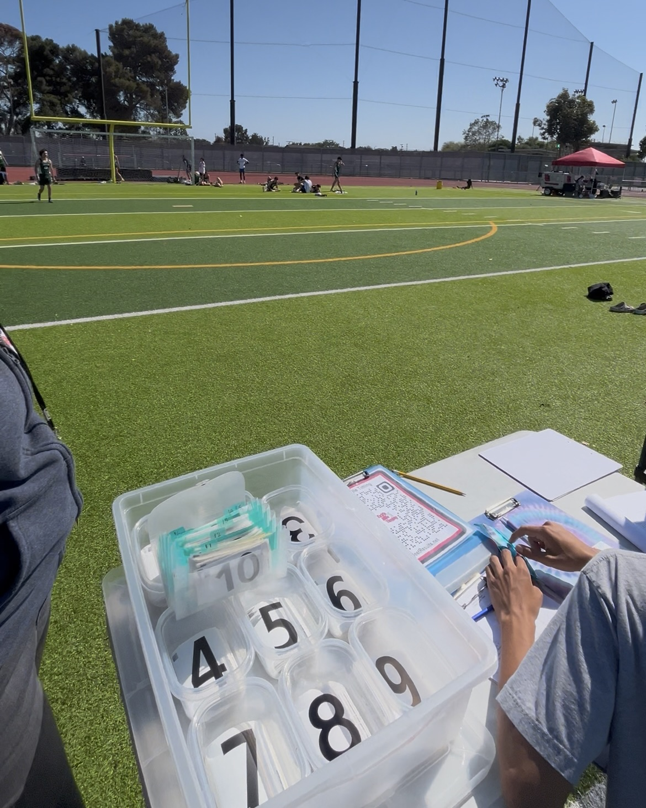
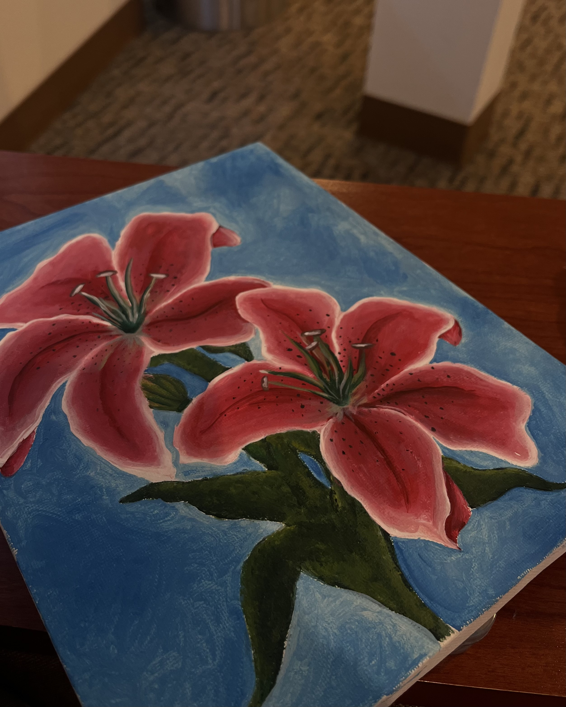
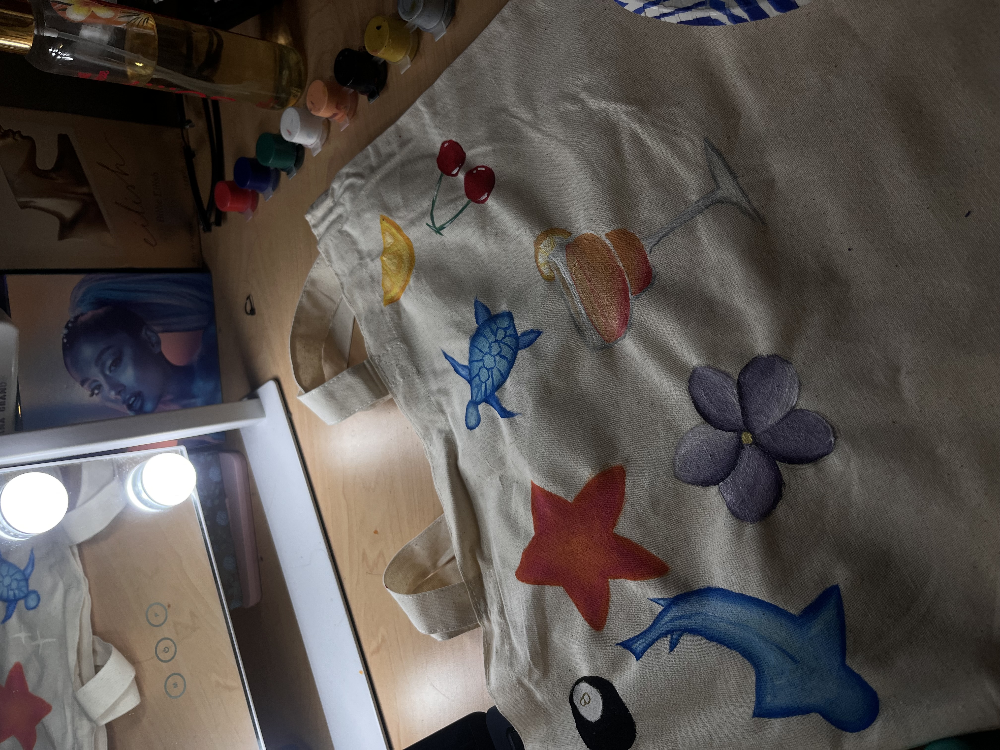

My name is Samantha Flores, and I am currently a dedicated undergraduate student at the University of California, Riverside, pursuing a degree in Psychology. My journey into the world of mental health and community service began long before I stepped onto a college campus. Growing up in the Watts neighborhood of Los Angeles, I was a firsthand witness to the power of community resilience and the vital importance of supportive social structures. My father’s career in gang intervention and youth programs provided me with a unique perspective on the challenges facing underserved communities, as well as the healing that can occur when individuals are given the right tools and support. These early experiences deeply influenced my professional goals and instilled in me a passion for helping others navigate complex life challenges
In my academic career at UCR, I have focused my studies on understanding human behavior and the various social factors that influence mental well-being. My ultimate career goal is to become a Licensed Clinical Social Worker (LCSW). I am particularly interested in working with youth and families, helping to break cycles of trauma and providing resources for community-based healing. I believe that a strong foundation in psychological theory, combined with practical social work skills, is essential for creating lasting change. While my offline identity is more reserved and focused on independent growth, I value structured environments where I can work diligently toward these goals. I am a firm believer in the power of rule-based systems and transactional leadership to ensure that organizations run efficiently and effectively for the people they serve
In addition to my academic pursuits, I have spent several years developing my leadership and organizational skills in practical settings. During high school, I managed the track and cross-country teams, where I was responsible for coordinating logistics, managing schedules, and ensuring the teams had everything they needed to succeed. This role taught me the importance of attention to detail and the value of behind-the-scenes work in supporting a larger mission. I carry this same work ethic into my current projects, whether I am managing my digital resale business on platforms like Depop and Vinted or preparing for my future career in social services. I enjoy the process of independent problem-solving and take pride in maintaining a professional and organized approach to every task I undertake.
• Managed team logistics and equipment and race timing for over 3 years
• Coordinated event schedules and organized student-athelte documentation for over 200 atheltes
• Assisted coaching staff in maintaining orderly practices and competition environments
• Curated and photographed vintage and Y2K aesthetic apparel for online storefronts
• Managed customer service, shipping logistics, and inventory tracking.
• Utilized digital marketing to build a personal brand and reach targeted buyer demographics.
• Collaborated with student leadership to plan and execute large-scale campus events including Homecoming and Valentine’s Day activities.
• Managed event logistics, coordinated volunteer schedules, and ensured all activities adhered to school protocols.
• Acted as a liaison between the student body and administration to advocate for community-building initiatives.
• TA'd for a Freshman class of 30 students for a year


